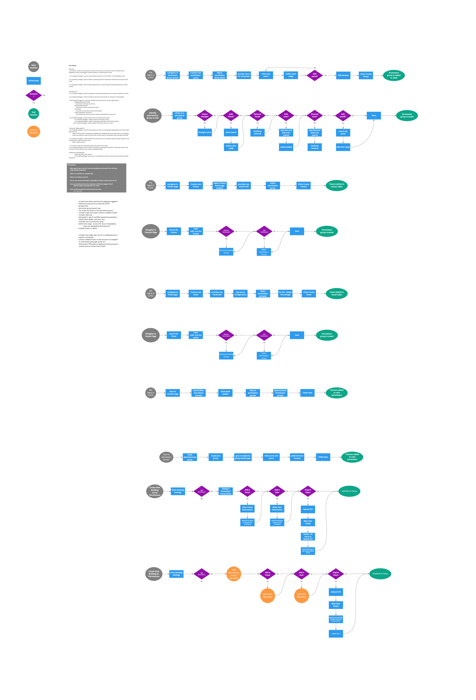
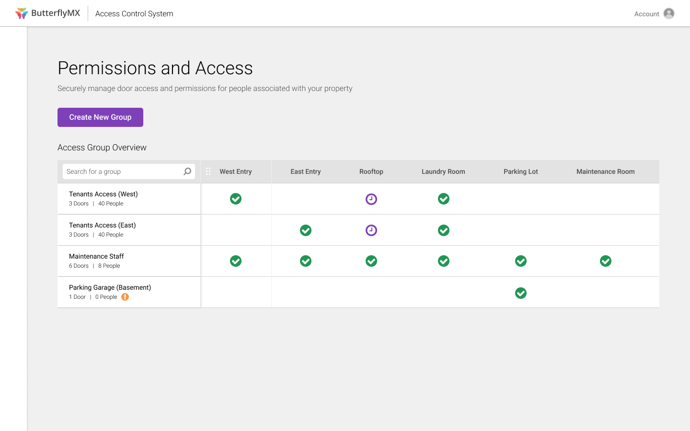
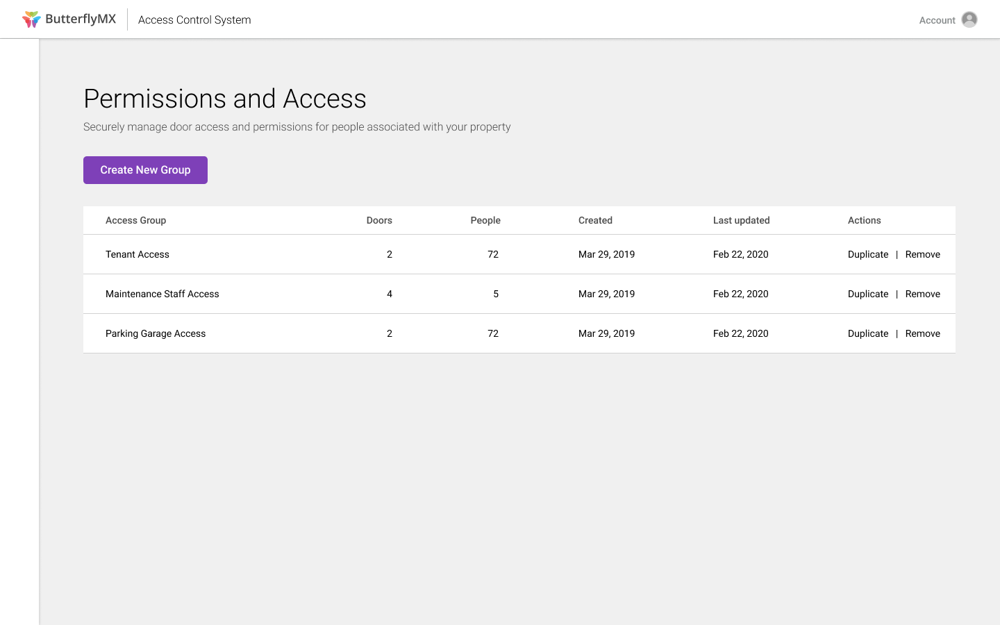
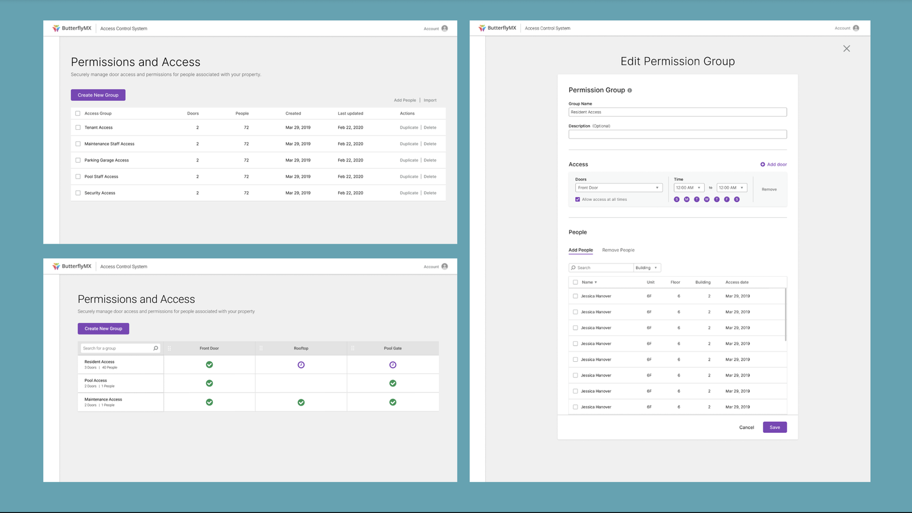

Outcomes
Permission groups became the layer that let ButterflyMX grow past the intercom. Once access was modeled around people, doors, and time, the platform had a coherent place to add every new device that followed.
Context
ButterflyMX's operating system was built around one job: getting people through the front door with a smart video intercom. The roadmap, though, was to control far more of the building, additional doors, amenities, elevators, and back-of-house spaces. That meant the system needed a real model for access: who can go where, and when.
The Problem
Access was managed by "zones." Zones were created to separate access at the building or location level, so a property with two intercoms for two buildings kept each building's residents to their own door. But most properties had a single zone, and a zone couldn't describe anything finer than the whole building. There was no way to control individual areas inside a property, and no way to set permissions at the level of a person or a role. We needed property managers to be able to give the right people access to the right areas at the right times.
My role and the ground truth
This was my first project with our sole product manager, and a chance to be the new person and learn the access-control space from the ground up. I worked with our Technical Project and Installation teams to understand how zones were actually wired in the field, and with Client Success to understand how property managers thought about access and where the current setup hurt. That grounding gave us the user stories to design against.
Competitive Analysis
New to proptech, I studied how Latch, PDK, and Kisi handled access control. A clear pattern emerged: permission groups were organized around the role or type of person tied to the building, residents, security, maintenance, and service providers like delivery and internet techs. Each group was essentially a set of doors, a set of time constraints, and the people assigned to it. That shape informed the flows we built.
User Stories and Flows
A handful of concrete stories kept the work honest:
- As a tenant, I want to use my phone to access the roof, so I have the same convenience there that I have at the front door.
- As a property manager, I want to restrict tenants' roof access after 11 PM and before 6 AM.
- As a property manager, I want my cleaning and maintenance staff to have roof access at all times.
- As a property manager, I want to let paying tenants into the gym while denying access to others.

Two directions, one A/B test
We took two design directions for the permission groups page into an A/B test: a matrix that mapped every group against every door, and a more traditional table. The matrix was dense and visual; the table was simpler and more scannable.


After watching property managers work through both, we chose the table. It was less confusing and let us show more information at a glance.
Testing it with property managers
We wrote a usability plan and ran it through UserZoom with property managers, screened with qualifying questions and a pre-survey about their buildings and responsibilities. Across 10 participants and 8 tasks, the completion rate was 95%, at an average of about 14 minutes. The tasks covered the real work: creating a group, adding people and doors to new and existing groups, and setting a time range for a door.
"This experience is far better than the one I currently use. It is logical, intuitive, organized, and clean. My current platform is slow, awkward, and archaic."
Property managers expected to group access by role, and they valued having one centralized place to manage doors and the people who could open them. Every participant finished the flow, and 100% said the experience beat their current tool.
The testing also showed where the model leaked. People expected checkboxes to be interactive for adding users, wanted a separate view of who had already been added, reached for search to find people, and tripped over some of our taxonomy and icons. Those became the next round of fixes.
What Shipped
The final design centered on a clear groups list and an edit panel where a manager builds a group from three things: the doors it covers, the time window for each, and the people in it. Stage, status, and access all read from one place instead of being scattered across the building's setup.

Constraints We Built Against
We shipped this without much of a safety net: no established design system, a front end on Bootstrap 3, a team of mostly back-end engineers, and a single front-end developer shared across projects. A good part of the job was advocating for the UX and the interactions over whatever the framework made easy.
Outcomes
Permission groups launched across the entire fleet and was announced publicly soon after. All 6,529 buildings (100%) went live with access management, every property carrying at least one default group, so single-zone buildings transitioned with no action required from the manager. Of the 421 properties running more than one zone, 322 (76%) created at least one additional group to set up differentiated access.
Property managers organized their groups in ways we expected and a few we did not: by building or location, by floor, by restricted or staff-only access, commercial versus residential, and by paid amenity.
Why It Mattered
Permission groups were the foundation that let ButterflyMX grow past the intercom. With access modeled around people, doors, and time, the platform could add keypads, smart locks, elevator controls, and key lockers and have a coherent place to put them. It made the whole product line more useful, and a great deal stickier for the buildings that ran on it.